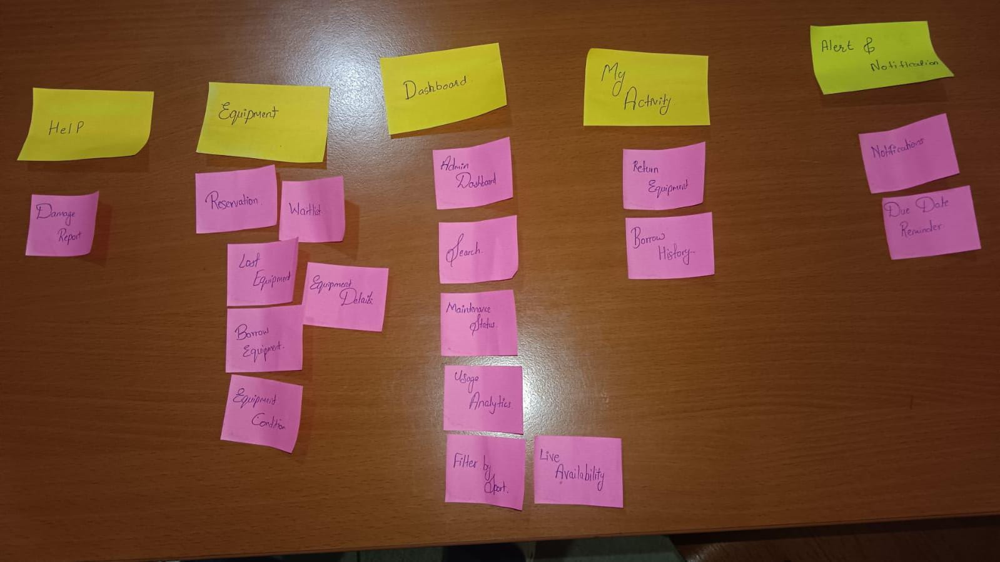
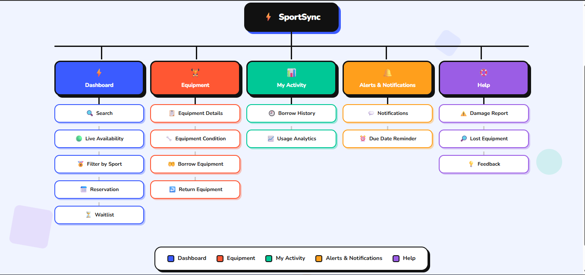
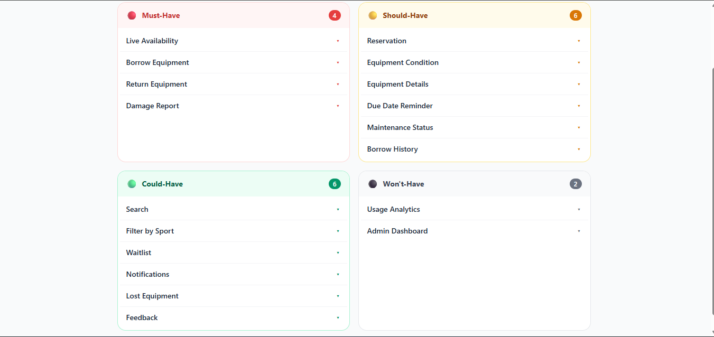

3
Student interviews
SPORTSYNC — THE PLAYBOOK
A research-driven concept for improving how students find, borrow, return and report problems with sports equipment on campus.
Students who regularly participate in sports at Vijaybhoomi University face difficulty accessing well-maintained sports equipment.
The current borrowing process is manual, equipment availability is not transparent, and damaged equipment is not consistently reported or maintained.
02 — SCOUTING THE FIELD
To understand the broken experience, I interviewed students who regularly use the campus sports facilities and observed how equipment is currently borrowed.
Student interviews
Current borrowing process
Key recurring problems
Students often cannot know whether equipment is available before walking to the sports block.
Equipment such as squash and table-tennis rackets is sometimes damaged or poorly maintained.
The borrowing process depends on a manual register, and some students do not consistently record their borrowing.
Students want equipment availability to be visible before they visit the sports block.
03 — MEET THE PLAYER
A research-based persona representing students who regularly participate in campus sports and depend on borrowed equipment.
20 years old · B.Tech Student
Plays badminton, squash and table tennis regularly.
Ayushi is an active student who enjoys playing multiple sports to stay fit and socialize with friends. She regularly borrows equipment from the campus sports office instead of owning equipment for every sport.
04 — EMPATHY MAP
The empathy map was created from the interview responses and observations to understand what students say, think, do and feel while trying to borrow sports equipment.

Students are not only frustrated by damaged equipment. A major source of frustration is the uncertainty before reaching the sports block. They want to know whether suitable and usable equipment is available before making the trip.
05 — USER JOURNEY
I mapped the experience of a student who wants to play a sport and needs to borrow equipment from the campus sports office. The emotion line shows how uncertainty and equipment quality affect the experience.

LOWEST POINT
Students spend time travelling to the sports block without knowing whether equipment is available, and even after reaching it, they may receive damaged or poorly maintained equipment.
06 — USER STORIES
The research findings were translated into user stories that describe what students need from a better equipment borrowing experience.
As a student, I want to check equipment availability before visiting the sports office so that I don't waste time walking there if the equipment is unavailable.
As a student, I want to borrow and return equipment through a clear and tracked process so that I can spend less time dealing with borrowing issues.
As a student, I want to report damaged equipment so that the sports office can identify and maintain equipment regularly.
I conducted a card-sorting activity with students to understand how they naturally grouped sports-equipment features. The results helped identify clear groupings as well as features and labels that caused confusion.

Notifications and Due Date Reminder were grouped together under Alerts & Notifications, showing a clear relationship between these features.
Borrow Equipment, Equipment Details, Equipment Condition, Reservation, Waitlist and Lost Equipment were grouped around the equipment-borrowing experience.
Return Equipment and Borrow History were grouped under My Activity, while Search, Live Availability, Filter by Sport, Maintenance Status and Usage Analytics were placed under Dashboard.
The card-sorting results provided the basis for the first Information Architecture. The most consistent groupings were used to organize features into Dashboard, Equipment, My Activity, Alerts & Notifications and Help. This structure was then tested through tree testing to identify navigation problems.
Based on the card-sorting results, the features were organized into clear categories that match how students expect to find and use sports equipment services.

The Information Architecture was designed around the patterns identified during card sorting. Features were grouped into five main areas: Dashboard, Equipment, My Activity, Alerts & Notifications, and Help. This structure keeps availability and discovery features easy to access while separating borrowing, personal activity, alerts and support functions.
The Information Architecture was tested through five navigation tasks to identify where users could successfully find features and where the structure caused confusion.

The tree test achieved an overall success rate of 64%, with 16 out of 25 tasks completed successfully. Damage Report and Borrow History had the strongest results, with 100% task success. Live Availability, Reservation and Due Date Reminder each had a 40% success rate, showing that these features were harder for users to locate.
The features were prioritized using MoSCoW prioritization and a Desirability, Feasibility and Viability (DFV) matrix to identify the features that should form the first version of SportSync.

The two features debated most strongly for the final MVP were Live Availability and Damage Report. To make the decision objective, the features were evaluated using Desirability, Feasibility and Viability on a scale of 1–5.
| Feature | Desirability | Feasibility | Viability | Total |
|---|---|---|---|---|
| Live Availability | 5 | 5 | 5 | 15 / 15 |
| Borrow & Return | 5 | 5 | 5 | 15 / 15 |
| Damage Report | 5 | 5 | 5 | 15 / 15 |
| Reservation | 4 | 4 | 4 | 12 / 15 |
| Due Date Reminder | 4 | 5 | 4 | 13 / 15 |
Live Availability, Borrow & Return and Damage Report scored highest because they directly address the core problems found during research. These features therefore form the foundation of the SportSync MVP.
The MVP focuses on the features that directly address the biggest problems identified during research: checking equipment availability, borrowing and returning equipment, and reporting damaged equipment. These features provide the core value of SportSync without adding unnecessary complexity to the first version.
Based on the research and prioritization, these four features form the core of the SportSync experience.
Students can know whether equipment is available before travelling to the sports block.
Students can record their equipment borrowing through a clear and trackable process.
Equipment returns can be recorded so that the sports office knows what is currently borrowed.
Students can report damaged equipment so the sports office can identify items that need maintenance.
The research showed that the biggest issue is not simply access to sports equipment, but the uncertainty surrounding its availability, condition and borrowing process.
SportSync addresses these problems by making equipment availability visible, borrowing and returning trackable, and damaged equipment easier to report.